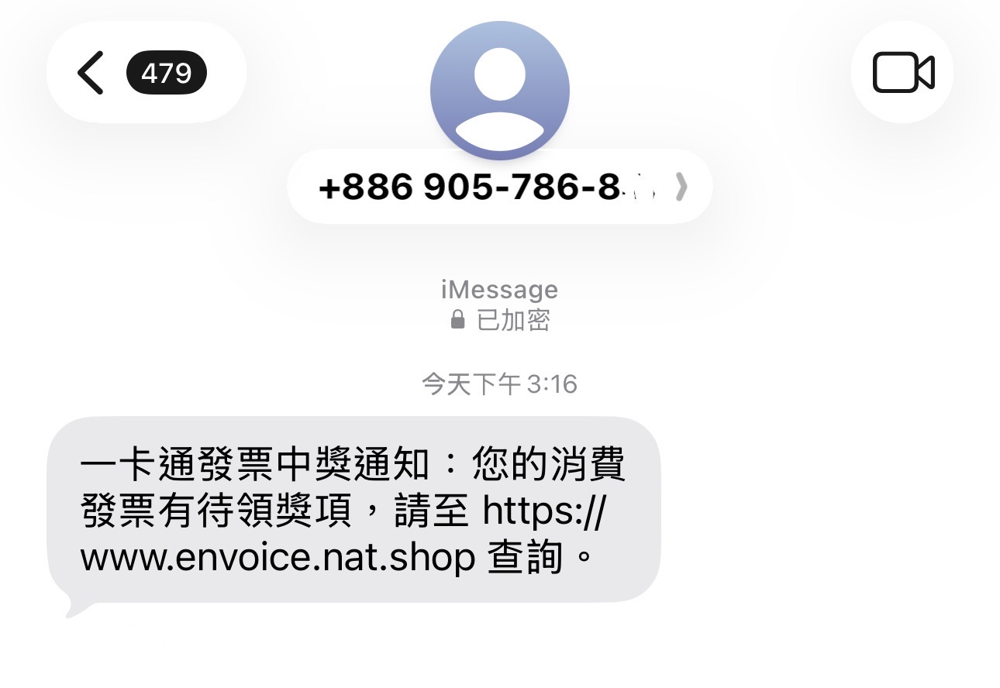
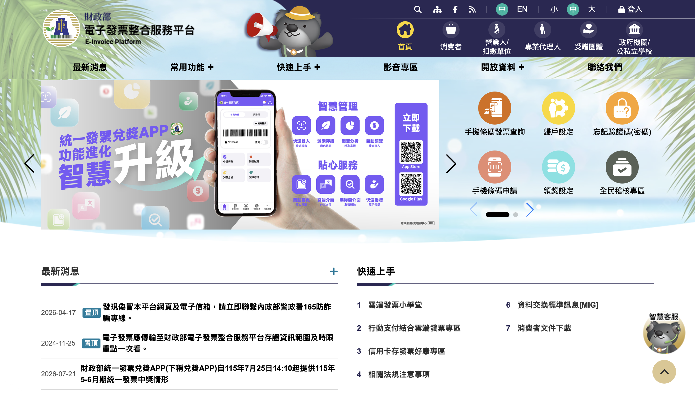

03 / 我們的方案
在聊天與瀏覽時，提供提醒。
CONVERSATION / 對話端
防詐 Agent
讀取對話脈絡
引用具體風險依據
預測可能的下一步要求
WEBSITE / 網站端
網站風險偵測
檢查網域與頁面訊號
顯示風險原因
在敏感操作時再次提醒
對方要求什麼？ → 這個要求合理嗎？ → 接下來應該怎麼做？
防詐雷達 Anti-Scam Radar
對話脈絡判讀 × 網站風險偵測
01 / 先做一個小測試
先看看這則訊息。


03 / 我們的方案
讀取對話脈絡
引用具體風險依據
預測可能的下一步要求
檢查網域與頁面訊號
顯示風險原因
在敏感操作時再次提醒
04 / 提醒之後，為什麼要相信？
05 / 如何衡量效果
付款完成輪次 − 首次有效示警輪次
僅計成功提前示警案例，另列漏報數。
命中預測數 ÷ 可判定預測數
事先設定具體行為與判定時間窗。
實測結果尚待填入；正式版本另列未決預測、重跑次數與資料集性質。
06 / 我們想創造的價值